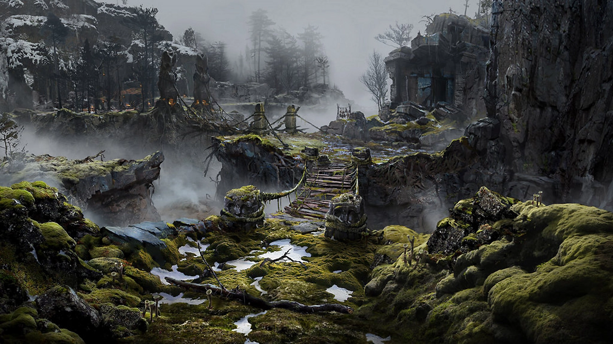
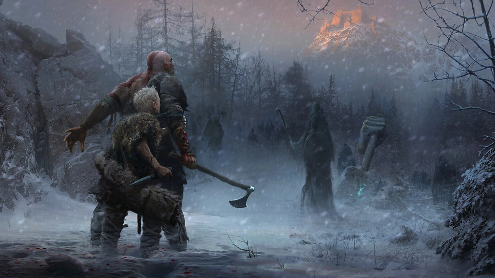
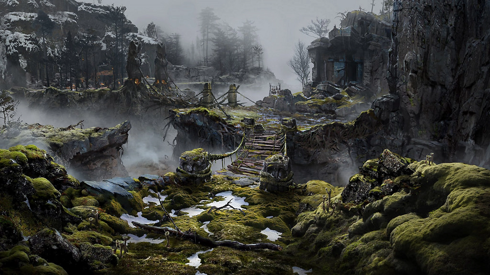
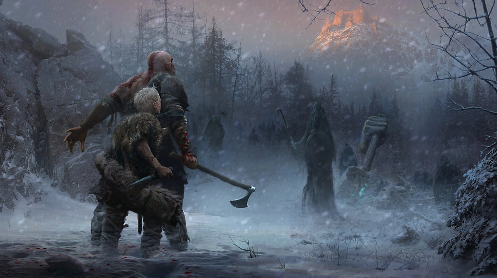

더 어둡고, 더 광포한 세계
발견과 탐험이 강조된 이 세계는 프랜차이즈 역사상 최대 규모이며, 숨막히도록 위협적인 God of War의 풍경을 탐험하도록 플레이어를 초대합니다.

크레토스는 God of War와 갓 오브 워 라그나로크에서 과거의 삶을 등지고
아들 아트레우스와 함께 새 삶을 찾기 위해 그리스가 아닌 북유럽 세계로 새로운 여정을 떠납니다.
발견과 탐험이 강조된 이 세계는 프랜차이즈 역사상 최대 규모이며, 숨막히도록 위협적인 God of War의 풍경을 탐험하도록 플레이어를 초대합니다.
 
